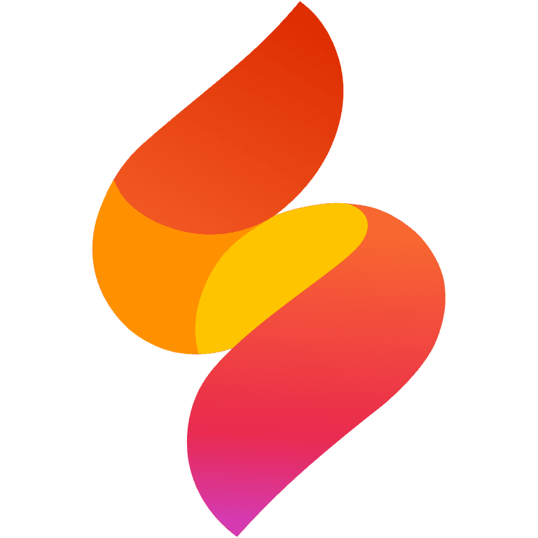
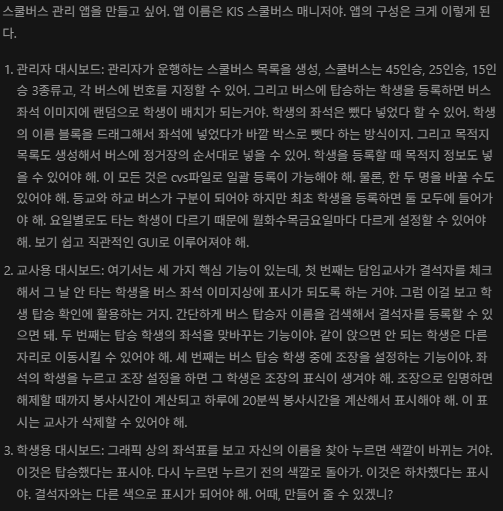
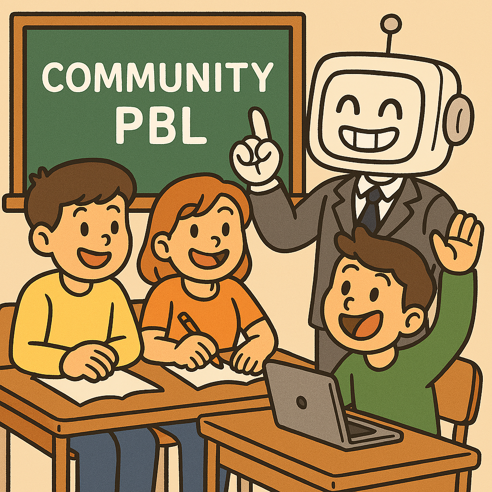

FIREBASE STUDIO와 함께 한
KIS 스쿨버스 매니저 개발 과정
1. 어떻게 시작되었나
- 개발 동기: 복잡한 스쿨버스 운행 및 탑승 현황의 직관적, 통합 관리 시스템 필요
- 핵심 사용자: 관리자, 교사, 학부모/학생
- 개발 방식: Firebase Studio에 탑재된 AI 어시스턴트(Gemini)와의 대화

2. 어떻게 만들었나?
- 첫 프롬프트에서 구체적인 목표와 메뉴 구성 등을 입력
- 미리보기 창을 보며 테스트를 하고 계속 수정 요구
- 여러 디바이스에서 테스트를 하면서 오류를 개선
- 바꾼 방식이 마음에 안 들면 이전 버전을 되돌리기
3. 가장 짜증나는 것을 해결
- 학부모용 탑승 신청 페이지: 신청서 없음
- 학부모가 직접 미탑승 표시(선생님도 가능)
- 학생이 탑승하며 자기이름 직접 체크-학부모가 바로 확인
- 분실물 등록 및 학생용 확인 기능
4. 가끔은 답답한 Gemini 내가 하고 만다
- 불안정한 좌석표 UI: 드래그 앤 드롭을 '좌석 클릭 → 학생 클릭' 방식으로 변경
- 심각한 성능 저하: 구글 시트에서처럼 단순하게 만들라고 하니까 해결
- 로그인 인증 실패: 안 돼, 다시 해, 다시 해 반복해서 해결
5. 최종 애플리케이션 기능
- 관리자: 역할 기반 접근, 버스/교사/목적지/좌석의 정교한 관리
- 교사: 실시간 출결, 학생 검색, 조장 관리, 분실물 등록
- 학부모/학생: 전용 포털, 실시간 탑승 정보 확인, '탑승 안 함' 알림
6. Gemini와 함께 한 소감
- 너무나 쉬운 개발: 아이디어만 있으면 바로 만들어 줍니다
- 코딩을 알면 더 쉽다: AI도 실수를 합니다
- 예시를 잘 들면 좋다: 참고할 사이트나 프로그램을 알려주세요
- 친구처럼: 기왕이면 마음에 드는 말투로

7. 교육적 활용
- AI 이해 교육: AI가 명령을 어떻게 수행하는지
- 코딩 입문 교육: AI가 만든 코드를 보고 분석
- 지역사회 기반 PBL 학습: 문제를 찾아 해결하는 프로그램 개발